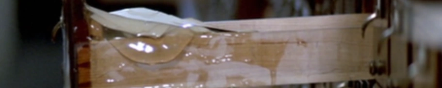
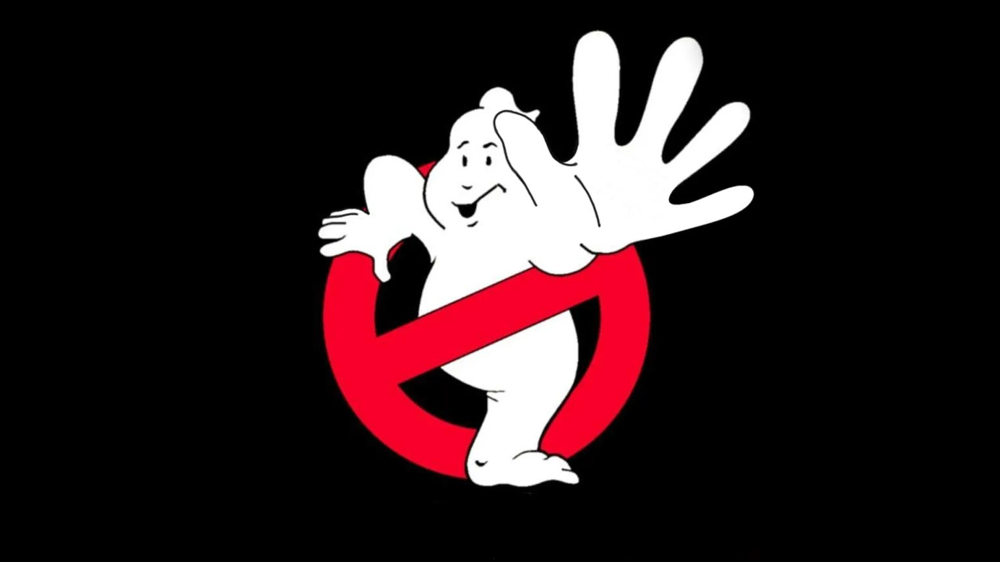
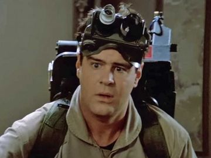

Our Work
Ghost Busting
As the name suggests, we are a task force dedicated to ghost-related services!
One of our primary goals is to eliminate any and all kinds of hostile paranormal activity. From possessions and hallucinations to large-scale hauntings and catastropic paranormal events, the Ghostbusters have got you covered!The Ghostbusters are specialized to contain and eliminate ghosts when the call arises.
Paranormal Technology
Ghost-busting isn't just about the ghosts, however.
We are the pioneers of technology built to observe, eliminate, and communicate with ghosts. With the ingenuity of Dr. Egon Spengler, we will expand the field of paranormal science and technology to a global level.We boast a large miscellany of equipment, such as the P.K.E. Meter that allows us to track any ghost, the Particle Thrower that enables paranormal combat, and the ever-reliable Ghost Trap; and these are just some of our staple equipment for a regular mission!
Parapsychology
We also dive deep into the unknowns for the sake of ghost knowledge!
Along with technology, we also have research regarding ghosts and other types of paranormal activity. Our studies on ghosts has resulted in a vast knowledge of the paranormal once unavailable to mankind.
NEWS
TOP 5 WAYS to Keep Yourself Safe from Ghosts!
EXCLUSIVE! An Interview with Egon Spengler

The End of Stay Puft?
Ray Stantz on the Matter...